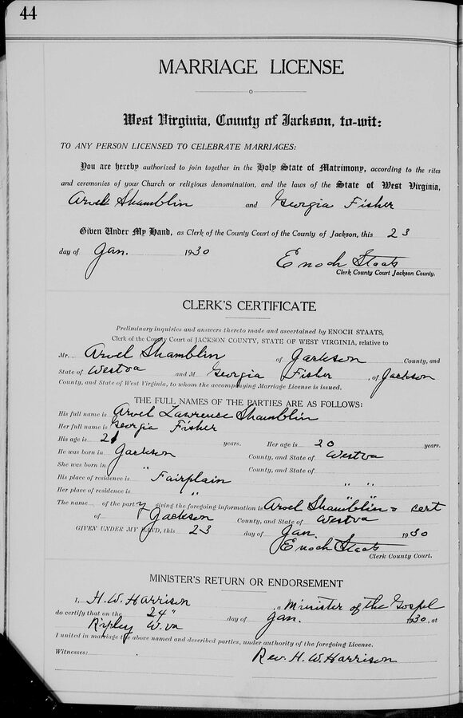
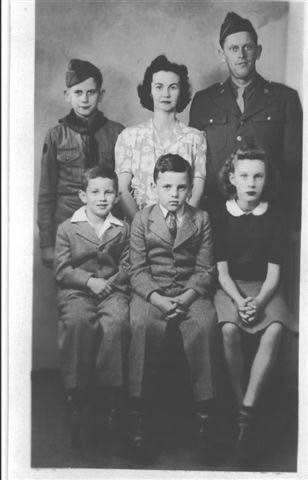

Georgia Mae Fisher
24 December 1909 – 3 July 1988
Quick Facts
Immediate Family
Children
Richard Lawrence Shamblen (4 Feb 1932 – 3 Oct 1968), also written Lawrence Richard DOCUMENTEDBetty Carolyn Shircliff (b. 17 April 1934) DOCUMENTED
Lowell Harold Shamblen (b. 18 December 1935) DOCUMENTED
Clifford Earl Shamblen (b. 27 January 1938) DOCUMENTED
Siblings
- Velma Alice Fisher, b. 16 Mar 1907 DOCUMENTED
- Virdie Burton Fisher, b. 7 Dec 1911 DOCUMENTED
- James Weston Fisher, b. 23 Mar 1914 DOCUMENTED
- Paul Carroll Fisher, b. 14 Jul 1916, died young SUPPORTED
- Wilma Faye (Fisher) Beeghly, b. 27 Dec 1918 DOCUMENTED
- Edwin Polsley Fisher (1923–2024) SUPPORTED
- Kermit Winfred Fisher (b. 1926) SUPPORTED
The first five appear with Georgia in the 1910 or 1920 census. Birth dates come from the 1939 Polsley genealogy. Which brother died in childhood (Burton in 1921, or Paul) is disputed between the genealogy, FamilySearch and family memory. Edwin's birth year is 1923 in the genealogy and 1920 on FamilySearch.
On Family Tree Sites
Couple Folder
Life Timeline
1909 · age 0
Born (24 Dec), Fairplain, Jackson Co., WV SUPPORTED
1910 · age 0
In her grandparents James M. and Nancy Fisher's household with her parents and sister Velma, Ripley district, Jackson Co., WV DOCUMENTED
1920 · age 10
In her parents' household, with five brothers and sisters, Ripley district, Jackson Co., WV DOCUMENTED
1930 · age 20
Married Arvel Lawrence Shamblen (24 Jan), Ripley, Jackson Co., WV DOCUMENTED
1932–1938 · age 22–28
Four children born at home, Fairplain, Jackson Co., WV DOCUMENTED
1940 · age 30
Family of six in the census, Ripley district, Jackson Co., WV DOCUMENTED
c. 1944 · age 34
Moved to 827 W. Washington Street, Charleston, WV FAMILY ACCOUNT
1944–1945 · age 34–35
Kept the household while Arvel served in the Army, Charleston, WV SUPPORTED
1950 · age 40
Family at 827 W. Washington Street, Charleston, WV DOCUMENTED
1961 · age 51
Mother Rhoda Alice died (9 Nov), Charleston, WV DOCUMENTED
1963 · age 53
Father Virdie died (9 Dec), Charleston, WV DOCUMENTED
1968 · age 58
Son Richard killed in a truck crash (3 Oct), near Mt. Pleasant, Pennsylvania DOCUMENTED
1988 · age 78
Died (3 Jul), Charleston, WV SUPPORTED
Life Story
Georgia Mae Fisher was born on Christmas Eve, 24 December 1909, at Fairplain in Jackson County, West Virginia, the second daughter of Virdie Lee Fisher and Rhoda Alice Polsley. In the spring of 1910 the census found her, three months old, in the home of her grandparents James M. and Nancy Fisher, where her young parents and her sister Velma were living too. By 1920 she was ten and living in her parents' own household with her older sister Velma and four younger brothers and sisters. Her mother's family, the Polsleys, had their history written down in a 1939 family genealogy.
On 23 January 1930 the county clerk at Ripley issued a license for Georgia Fisher, 20, and Arvel Shamblin, 21, both of Fairplain, and the next day Rev. H. W. Harrison married them at Ripley. That spring the couple were farming on rented land in the Ripley district.
Her four children were all born at home at Fairplain between 1932 and 1938, the first being Richard Lawrence on 4 February 1932. The 1940 census lists Georgia, thirty, with four years of high school, keeping house for a family of six.
Around 1944 the family moved to 827 West Washington Street in Charleston, and in the spring of that year Arvel went into the Army. The family remembers Georgia as the backbone of the home: she ran the household and the raising of the children, got everyone to Calvary Baptist Church every Sunday, and taught Sunday School there. She later worked behind the counters at the Diamond and at Stone & Thomas, Charleston department stores. Her grandchildren called her “Mimi.”
Georgia lost her mother in 1961, her father in 1963, and her eldest son, Richard, in 1968. She died in Charleston on 3 July 1988, at seventy-eight. Arvel outlived her by more than twelve years.
More of Georgia's story will be added as family members share their memories.
Photo Gallery






Sources and Evidence
- 1910 U.S. census, Ripley district, Jackson County, WV, ED 53, sheet 16A (Roll T624_1681): Georgia M. Fisher, 3/12, granddaughter, in the household of James M. Fisher, 52, with Verdie L., 25, Alice, 21, and Velma A., 3 DOCUMENTED
- 1920 U.S. census, Ripley district, Jackson County, WV, ED 60, p. 1A (Roll T625_1954): Georgia M., 10, daughter of V. L. and Alice Fisher, with Velma, Burton, Weston, Paul and Willma DOCUMENTED
- West Virginia, Jackson County marriage register, pp. 44–45: license 23 Jan 1930 (clerk Enoch Staats) for Arvel Laurence Shamblin, 21, born Jackson County, and Georgia Fisher, 20, both of Fairplain; married 24 Jan 1930 at Ripley by Rev. H. W. Harrison. Image in the couple's Documents folder (from Ancestry) DOCUMENTED
- 1930 U.S. census, Ripley district, Jackson County, WV (Roll 2535, p. 5B, dwelling 96): Arvel, 21, head, farmer, renting; wife Georgia, 20 DOCUMENTED
- 1940 U.S. census, Ripley district, Jackson County, WV, sheet 7A (Roll T627_4410, ED 18-11): Arvel (indexed “Orvil L”), 31, wife Georgia, 30, and four children; residence in 1935 Kenna, Jackson County; Georgia's schooling high school 4th year DOCUMENTED
- 1950 U.S. census, 827 W. Washington St., Charleston, Kanawha County, WV: Arvel L. and Georgia M. with four children DOCUMENTED
- Social Security Death Index: Georgia M. Shamblen, b. 24 Dec 1909, d. 3 Jul 1988, last residence Charleston, WV SUPPORTED
- Death certificates of her parents, Virdie L. Fisher (1963) and Rhoda Alice Fisher (1961), as summarized in their couple profile DOCUMENTED
- Katherine A. Polsley Bryan, Genealogy of the Baltzly-Balsley-Polsley Family (1939): Georgia Mae Fisher m. 24 Jan 1930 Arvel Laur. Shamblin (b. 20 Jan 1908); lists three of the four children SUPPORTED
- Family accounts summarized in the couple profile (a son's written memoir; family photo captions) FAMILY ACCOUNT
Grades: DOCUMENTED an original record says it · SUPPORTED several records point to it · FAMILY ACCOUNT the family's own telling · UNPROVED a lead, not proved.
Research Notes and Open Questions
- Parents: an older family account named James M. Fisher and Nancy Jane Casto as her parents. The 1910 census shows why: she was living in their home as their granddaughter, with her parents Virdie and Alice. The 1920 census names her as Virdie and Alice's daughter, and the 1939 Polsley genealogy agrees. Her own 1909 birth record would close the question for good.
- Burial place not found. Her 1988 obituary (Charleston Gazette) and a death certificate are the next places to look; the family is still checking whether she rests at Spring Grove with Arvel and Richard.
- Birth and death dates rest on the SSDI and family records; two online trees give 24 Feb 1909 and 2 Jul 1988.
- The Ancestry profile linked below was created early in the research with vitals that do not match the records (an October 2026 note records 20 Apr 1911 – 14 Dec 1997 there); check it before relying on it.
- Her family nickname “Mimi” came from her eldest grandson.
DNA
No DNA matches linked yet.